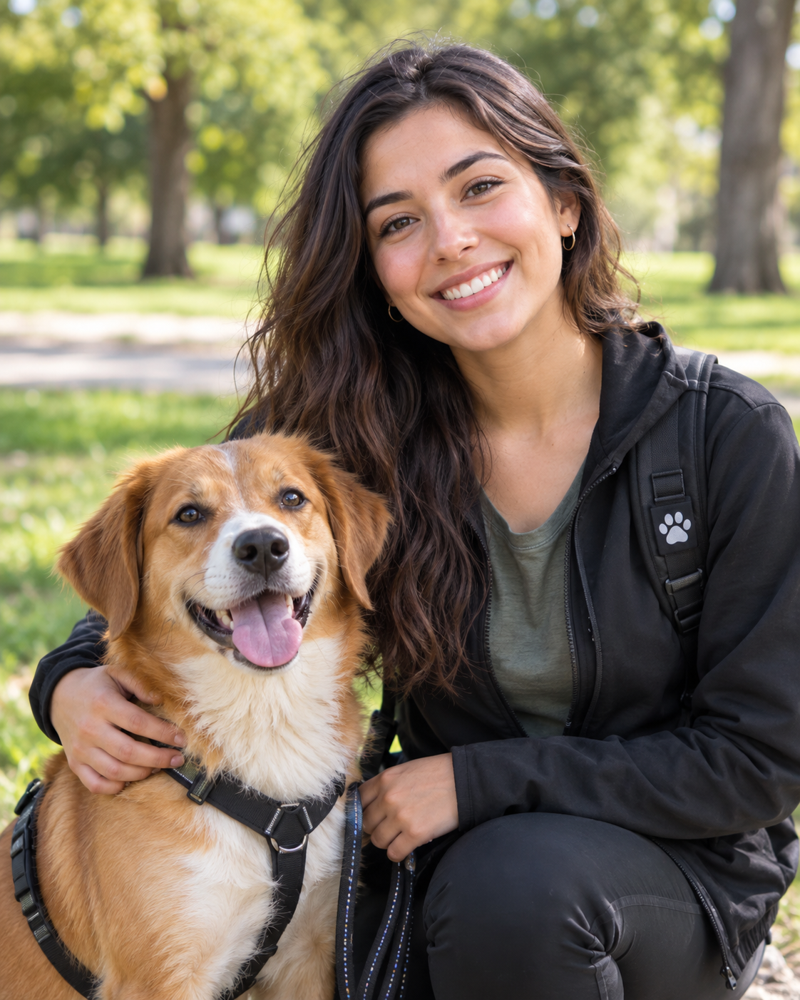

Laura Méndez
Calificación: 4.9 de 5
₡5 000 por hora
Ver PerfilConecta con paseadores verificasos cerca de ti y bríndale a tu perro los paseos que se merece.
Perfiles revisados para brindar mayor confianza
Conozca las experiencias de otros dueños
Revise la información antes de confirmar

Calificación: 4.9 de 5
₡5 000 por hora
Ver PerfilCalificación: 4.8 de 5
₡4 500 por hora
Ver PerfilCalificación: 4.9 de 5
₡5 500 por hora
Ver Perfil